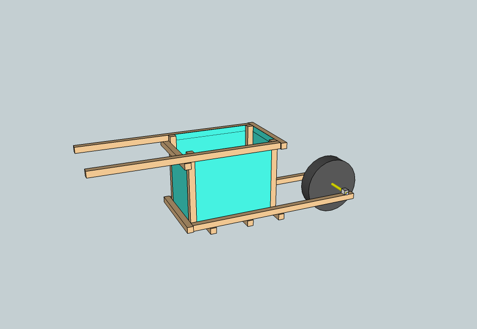
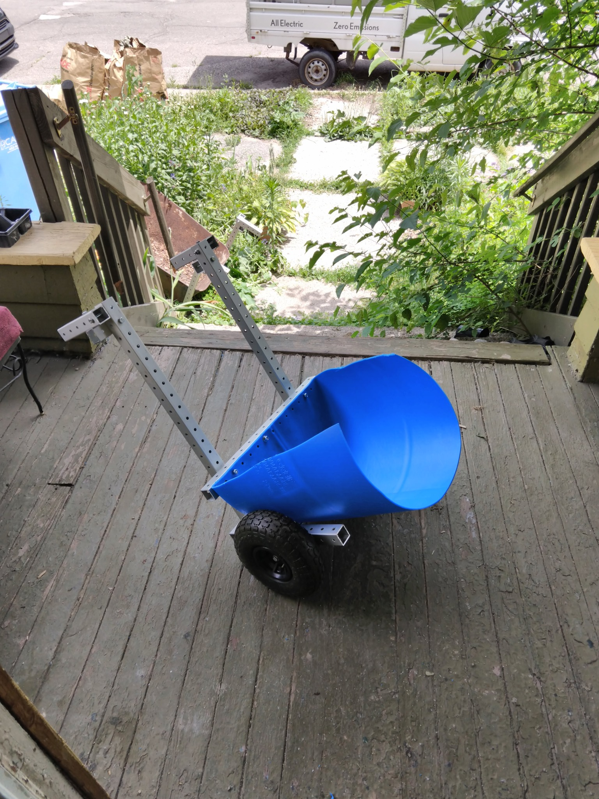
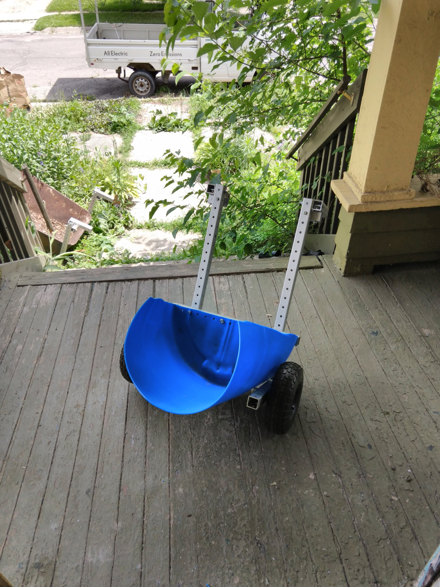
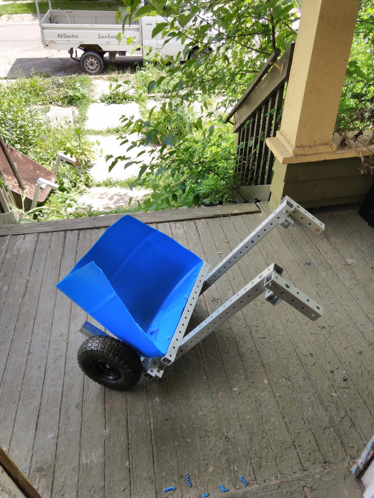
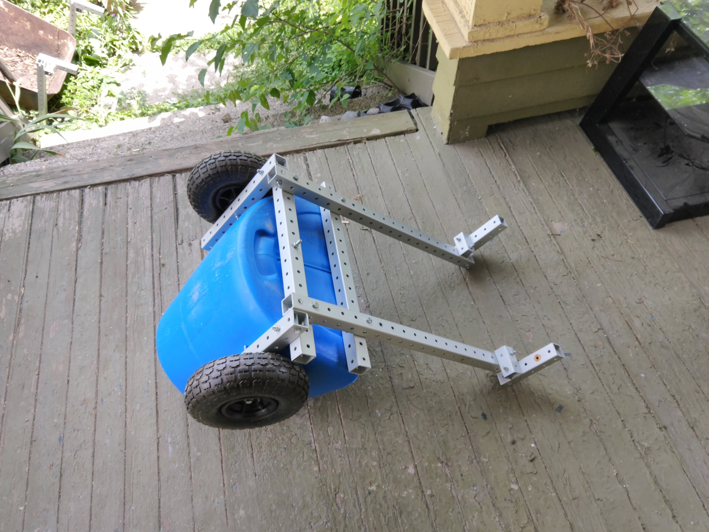

wheelbarrows
^ Projects infobox ^^
| image | Wheelbarrow.png |
| designers | |
| date | |
| vitamins | |
| materials | |
| transformations | |
| lifecycles | |
| tools | |
| parts | |
| techniques | |
| files | |
| suppliers | |
| git | |
Introduction
A wheelbarrow is a small hand-propelled vehicle, usually with just one wheel, designed to be pushed and guided by a single person using two handles at the rear, or by a sail to push the ancient wheelbarrow by wind. The term "wheelbarrow" is made of two words: "wheel" and "barrow." "Barrow" is a derivation of the Old English "barew" which was a device used for carrying loads.
The wheelbarrow is designed to distribute the weight of its load between the wheel and the operator, so enabling the convenient carriage of heavier and bulkier loads than would be possible were the weight carried entirely by the operator. As such it is a second-class lever. Traditional Chinese wheelbarrows, however, had a central wheel supporting the whole load. Use of wheelbarrows is common in the construction industry and in gardening. Typical capacity is approximately 100 litres (3.53 cubic feet) of material.
A two-wheel type is more stable on level ground, while the almost universal one-wheel type has better maneuverability in small spaces, on planks, in water, or when tilted ground would throw the load off balance. The use of one wheel also permits greater control of the deposition of the load upon emptying.
Challenges
Approaches
The tray can be made by bolting ABS plastic boards directly to the the tray frame or you can simply buy a plastic tray.
A shop-bought tray has the advantage of being detachable, which can come in handy for weeding, ...





Parts
Bill of Materials (imperial version, 1.5 inch GB):
4 gridbeams of 4 foot in length
6 gridbeams of 1,5 foot in length
2 pillow block bearings
an axle and wheel
4 wooden or ABS plastic boards or shop-bought plastic tray
nuts and bolts
Bill of Materials (metric version, 40 mm GB):
4 gridbeams of 1,2 meter in length
6 gridbeams of 0,5 meter in length
2 pillow block bearings
an axle and wheel
4 wooden or ABS plastic boards (20 cm high) or shop-bought plastic tray
nuts and bolts
References
- Landworks Utility Electric Battery Wheelbarrow
- Peipei Scooter - scooter transaxles
- Wikipedia: Wheelbarrow